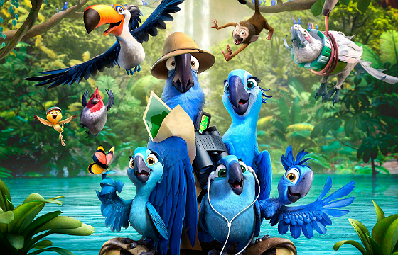

Filmes Favoritos:
| Título | Ano de Lançamento | Ator Principal |
|---|---|---|
| Rio 2 | 2014 | Jesse Eisenberg |
| Como Treinar o Seu Dragão | 2010 | Jay Baruchel |
| Bolt: O Super-Cão | 2008 | John Travolta |
Formulário de Contato:
Descrição do filme RIO

"Rio 2" é a continuação da aventura dos personagens Blu, Jewel e seus filhotes. A história se passa na Amazônia, onde a família viaja para encontrar os últimos membros da espécie de Jewel. No caminho, eles enfrentam desafios, incluindo a ameaça de madeireiros e a rivalidade com Nigel, o antagonista do primeiro filme, que busca vingança. Blu tenta se adaptar à vida na selva, enquanto Jewel se reconecta com sua família e seus instintos naturais. A trama explora temas como família, amizade e a importância da preservação ambiental, tudo isso com muita música e animação vibrante. O filme é uma celebração da cultura brasileira, com ritmos contagiantes e uma mensagem sobre proteção da natureza.